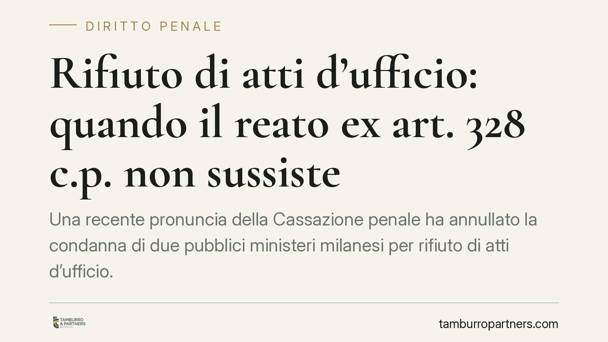

Rifiuto di atti d'ufficio: quando il reato ex art. 328 c.p. non sussiste
Una recente pronuncia della Cassazione penale ha annullato la condanna di due pubblici ministeri milanesi per rifiuto di atti d'ufficio. La Corte ribadisce un principio netto: il reato richiede un atto dovuto e un rifiuto cosciente, non la mancata acquisizione di documenti rimessa alla valutazione discrezionale del magistrato. Un chiarimento con ricadute ben oltre il singolo caso.

Il fatto
Due sostituti procuratori della Procura di Milano erano stati condannati per rifiuto di atti d'ufficio in relazione a un noto procedimento. La competenza a giudicare i reati commessi da magistrati del distretto milanese spetta all'autorità giudiziaria di Brescia: per questo il giudizio di merito si è svolto davanti alla Corte d'appello bresciana.
La contestazione riguardava, in sintesi, la mancata acquisizione di documenti ritenuti rilevanti nel corso delle indagini. La Cassazione ha annullato la condanna senza rinvio, escludendo che la condotta integrasse gli estremi del reato.
Inquadramento normativo
L'art. 328 cod. pen. punisce due condotte distinte, che è bene non confondere.
Il comma 1 riguarda il pubblico ufficiale o l'incaricato di pubblico servizio che rifiuta indebitamente un atto che, per ragioni di giustizia, sicurezza pubblica, ordine pubblico, igiene o sanità, deve essere compiuto senza ritardo. È la figura dell'atto *indifferibile e dovuto*.
Il comma 2 descrive un'ipotesi diversa: l'omissione dell'atto a fronte di una richiesta scritta dell'interessato, quando siano decorsi trenta giorni senza che l'atto venga compiuto e senza che siano esposte le ragioni del ritardo. Qui il reato si fonda sull'inerzia qualificata rispetto a una sollecitazione formale del privato.
I due commi tutelano interessi diversi e hanno presupposti differenti. Il caso in esame ricade nell'area del comma 1: il presunto rifiuto di un atto che si assumeva doveroso nell'attività inquirente.
Perché la condanna è stata annullata
Il punto centrale è l'avverbio "indebitamente". Per il comma 1 non basta che un atto non sia stato compiuto: occorre che si tratti di un atto obbligatorio, indifferibile e che il mancato compimento sia frutto di un rifiuto consapevole e privo di giustificazione.
La decisione del pubblico ministero su quali documenti acquisire rientra, di regola, nella valutazione discrezionale sulla rilevanza probatoria degli elementi. Non è un atto vincolato. La mera mancata acquisizione di documenti, o una scelta investigativa discutibile, non equivale a un rifiuto penalmente rilevante.
La Corte ha inoltre valorizzato l'elemento soggettivo: il reato richiede la coscienza e volontà di sottrarsi indebitamente a un dovere. Non è sufficiente la negligenza, l'errore di valutazione o la scelta tecnica rivelatasi infelice. L'onere di dimostrare la consapevolezza del carattere indebito del rifiuto grava sull'accusa, e deve emergere con rigore dagli atti.
Implicazioni pratiche
La pronuncia ha rilievo per chiunque eserciti una funzione pubblica e debba decidere se e quando compiere un atto.
Il confine è questo: il procedimento penale ex art. 328 c.p. non può trasformarsi in un sindacato sul merito delle scelte discrezionali. Dove la legge lascia margini di valutazione, la scelta non diventa reato solo perché risulta sgradita o successivamente giudicata inopportuna.
Per il cittadino che subisce l'inerzia di un ufficio pubblico, il messaggio è opposto ma coerente: la via penale è uno strumento stretto e dagli esiti incerti. In molti casi gli strumenti amministrativi e civili sono più efficaci per ottenere l'atto o il risarcimento del danno.
Cosa fare in concreto
- Verifica la natura dell'atto. Prima di ipotizzare il comma 1, accerta che si tratti di un atto dovuto e indifferibile per ragioni di giustizia, sicurezza, ordine pubblico, igiene o sanità.
- Attiva la procedura del comma 2 se vuoi la tutela penale per inerzia. Presenta una richiesta scritta e formale all'ufficio, conservando la prova della consegna, e attendi il decorso dei trenta giorni.
- Documenta tutto. Date, protocolli, risposte o silenzi: l'elemento soggettivo del reato si prova sulla base di riscontri concreti, non di impressioni.
- Valuta i rimedi amministrativi. Diffida, istanza di accesso, ricorso al giudice amministrativo contro il silenzio: spesso ottengono il risultato in tempi più rapidi.
- Considera l'azione risarcitoria. Se l'inerzia o il ritardo hanno causato un danno, la via civile può essere più proporzionata rispetto a quella penale.
Consigliamo di far precedere ogni iniziativa da una valutazione tecnica sulla qualificazione dell'atto e sulla strategia più adeguata al caso.
Ogni condominio ha una storia a sé.
Se gestisci un'amministrazione e vuoi un confronto su una specifica questione condominiale, scrivi allo studio. Ti rispondiamo entro un giorno lavorativo.